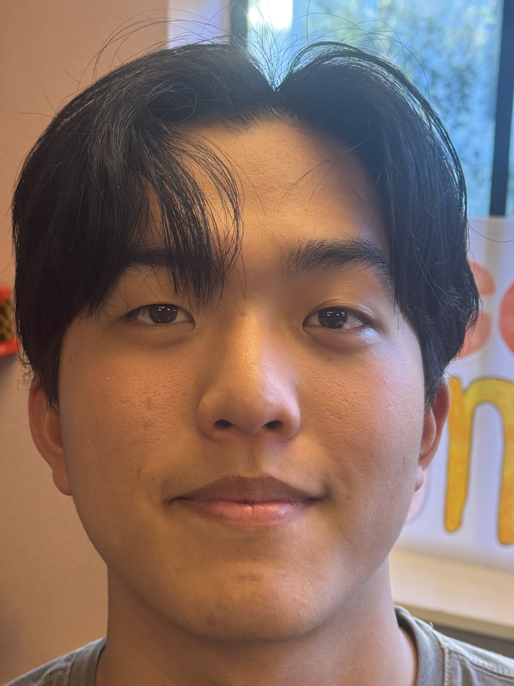
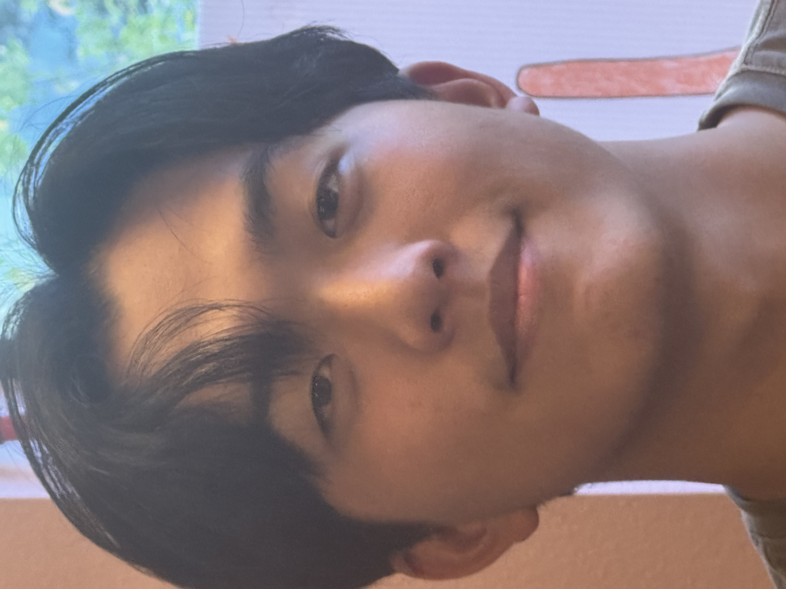
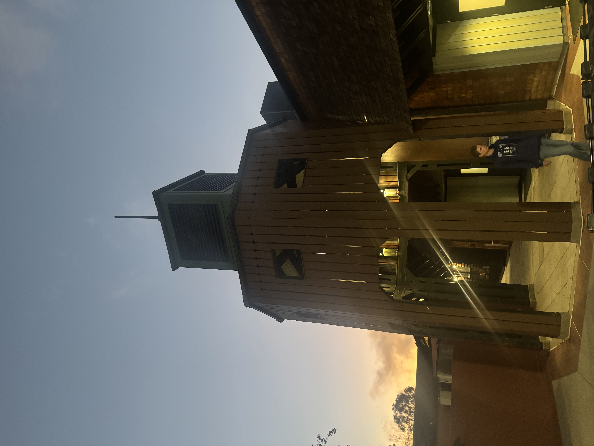
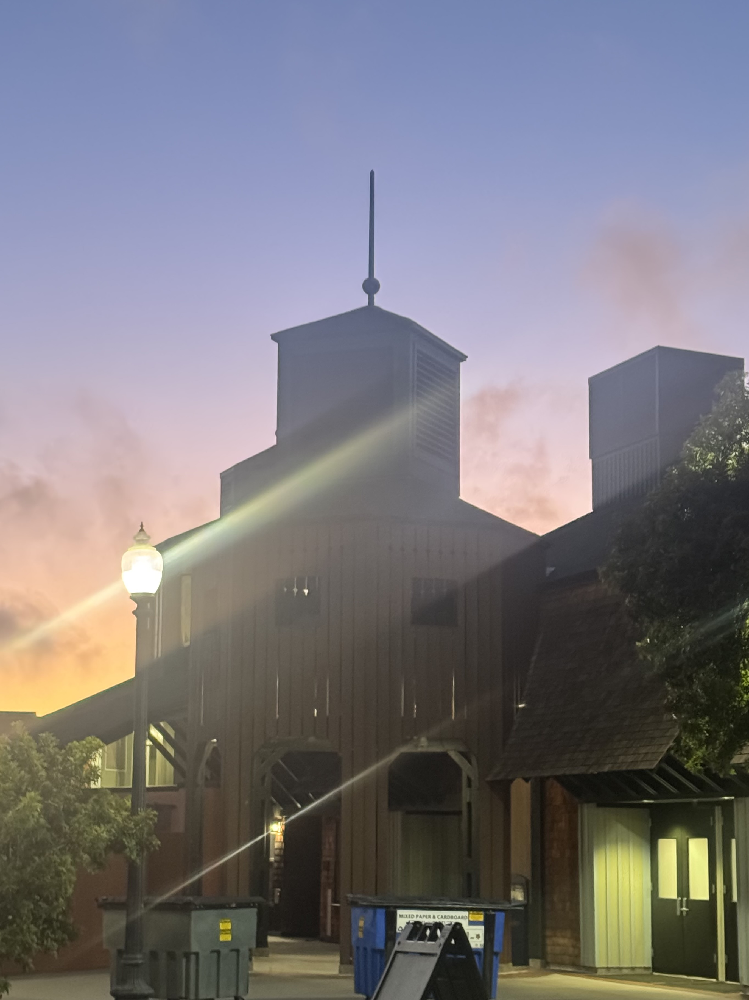

Took some photos with different lenses.
Photos of my face with different zooms from my iphone 15. In the image taken closer on the left, my central facial features look larger due to the perspective distortion. In the image taken further away on the right, my central facial features look smaller and more proportional.


Photos of a building with different zooms from my iphone 15. In the image taken closer on the left, the perspective distortion makes the bottom parts of the structure look larger. In the image taken further away on the right, the building looks more like a 2D projection, with less distortion and more parallel lines.


The cat gets wider as we move farther...